Accumulated balance set up
Accumulated balance is an exceptionally useful feature for users who would like to define and run balances for the specified fields. The balance calculations are automatically updated, thus no user intervention is required to get the actual state of the values.
This tutorial displays how to create an accumulated balance sheet from scratch.
To begin with, let us create the database that we can run for our little imaginary electronics shop. The basic database tables list for such undertaking implies the availability of the following tables: Customers and Employees – the tables that keep records of our customers and employees, as well as Products table that lists the electronic items we sell. These auxiliary tables do not take part in our calculations.
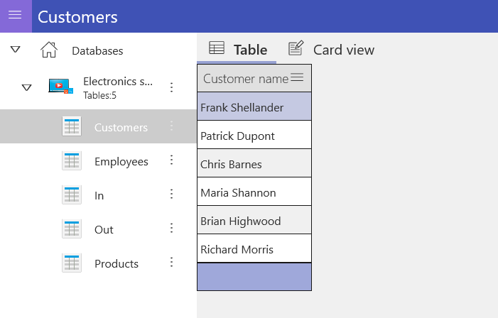
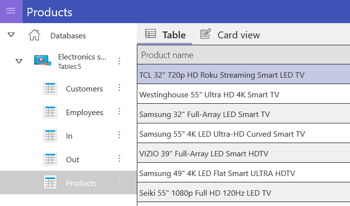
The rest two tables named In and Out are the main tables that we use to debit incoming goods and to issue invoices to our customers.
The In table keeps the daily records of the electronics supplied to our storage.
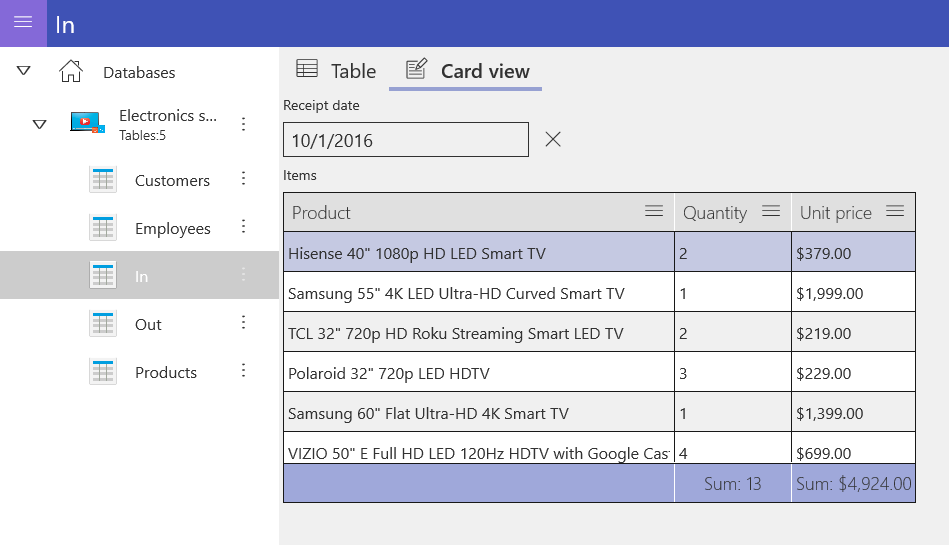
Whereas the Out table maintains the list of the invoices issued to our customers by the employees.
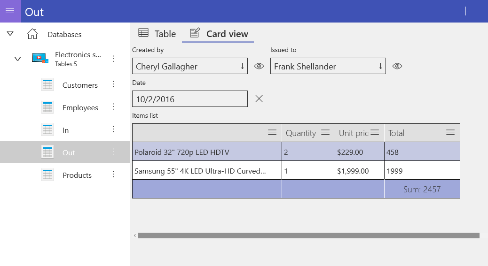
In such scenario, the supply of electronic devices to our shop and their subsequent selling are the two processes that run separately. This means we can have difficulties with the calculation of products in stock and cannot easily define the list of currently available devices. This is the case when the accumulated balance feature comes in handy.
The next steps will describe the process of adding the accumulated balance feature to our database in order to keep track of the items available in stock.
1.Add a new accumulated balance by tapping on the Plus icon in the upper right corner of the instrument panel.
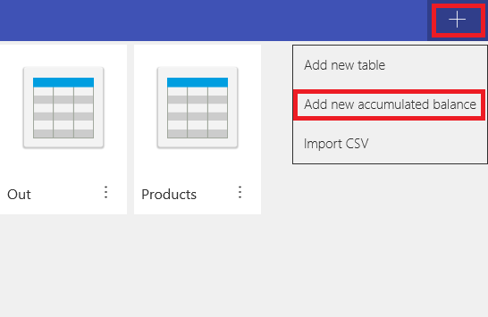
2.Specify the accumulated balance name and tap OK to confirm.

3.To configure the accumulated balance, tap on the Open configurator option.
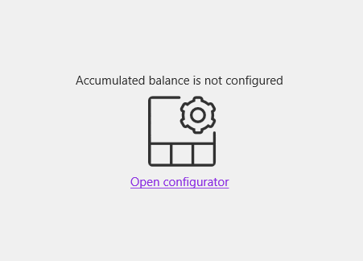
4.Then, tap Open structure editor to run it.
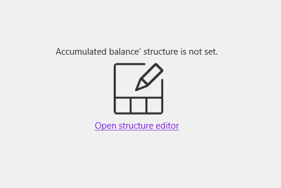
5.The accumulated balance structure consists of two field types. The detail fields that specify the fields we would like to run the balance for and the aggregation fields that display the data itself.
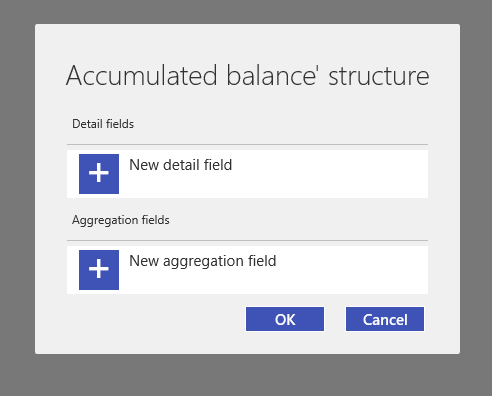
6.Set the detail field name to Product and specify the field type. In most cases, the Auto type will be the reasonable choice.
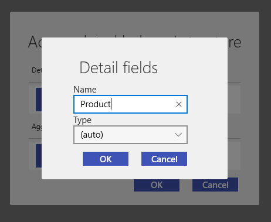
In case you made a mistake or would like to modify/delete the existing detail field simply tap on the options menu icon to the right of the field and select either Edit or Delete. The same is true for the aggregation fields.
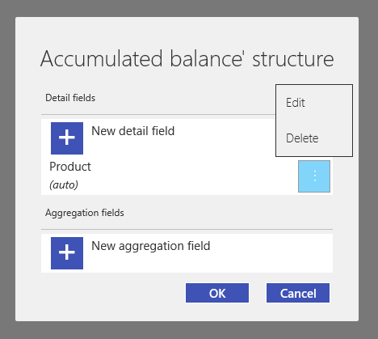
7.Set the aggregation field name to Availability and tap OK to confirm.
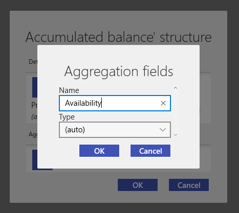
This is how your accumulated balance structure should look like.
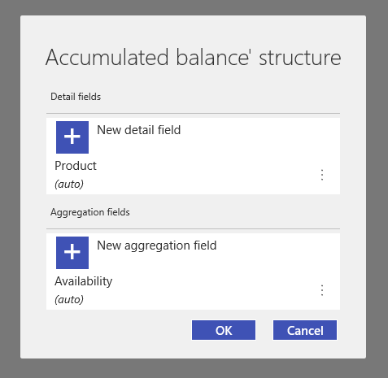
After the balance structure is created, we have to configure the settings by running the Configurator.
8.Tap on the Plus button to add the data source to our balance.
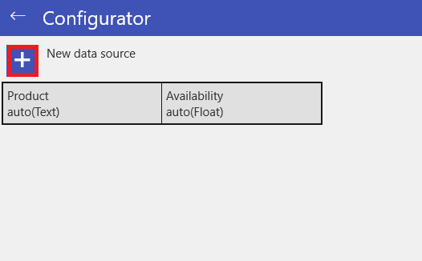
9.As data source we should specify In.Items nested table that contains the actual number of devices supplied to our storage for the entire period.
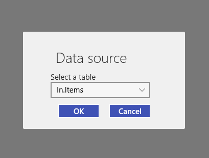
10.Now, set the Product field from the In.Items nested table as the detail field value.
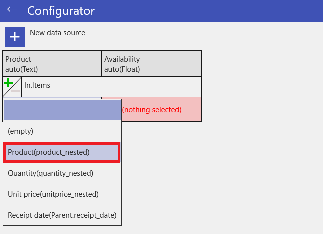
11.Then specify the Quantity field as the aggregation field value.
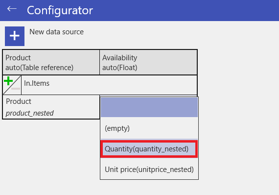
The active green plus sign to the left of the data source signals that the data from this source will be added to our balance.
The next step is to add the Out table data to our balance that will be subtracted from the In table data.
12.Tap on the plus icon once again to add the Out table data source.
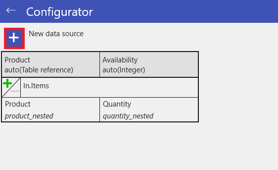
13.Set the Out.Items list table that lists the devices invoiced by the employees as the data source for Out table. Then specify the Product and Quantity fields accordingly.
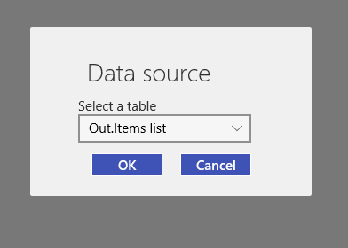
The active red minus sign to the left of the Out.Items list data source signals that the data from this source will be subtracted from our balance.
Eventually, the configured balance should look like this.
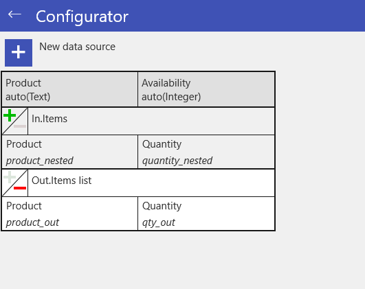
14.Tap on the check mark on the instrument panel to exit the configurator and save the accumulated balance.
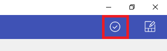
The figure below displays the newly created Stock balance that lists the devices from our storage and counts the number of devices left in stock. As seen, some of the devices are out of stock, which is proved by the 0 value in the Availability column. In some cases this information may look quite redundant and can be excluded by using the appropriate filter.

15.To configure the filter tap on the Filter icon in the instrument panel.
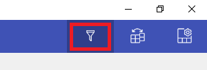
16.Set the filter parameters as specified below and tap OK to confirm the changes.
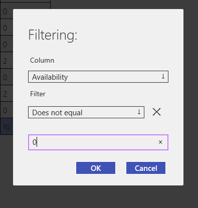
As a result, our balance lists only those devices that are currently available in stock.
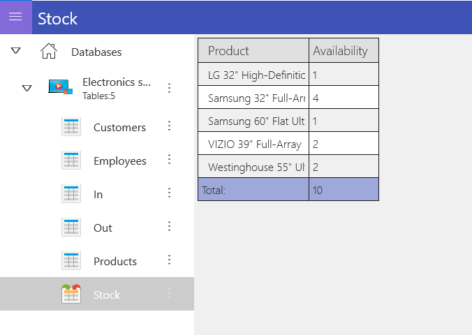
The database used in this sample is available under the following link: http://perpetuumsoft.com/Support/downloads/mobidb/Electronics_shop_sample.zip